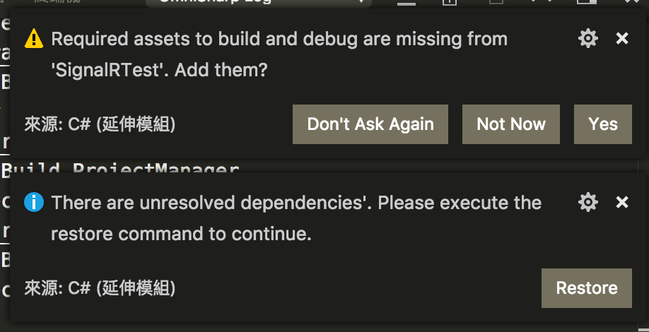
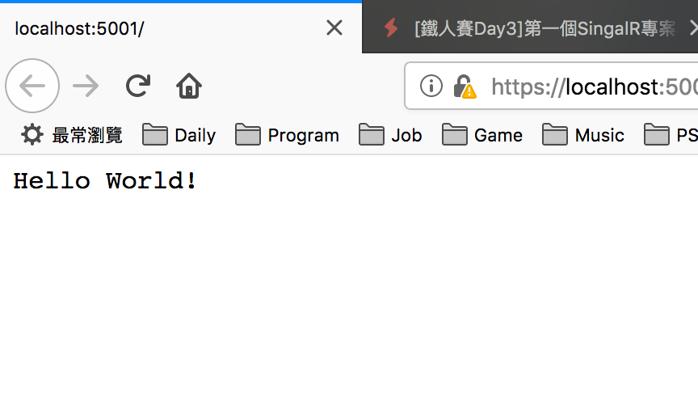
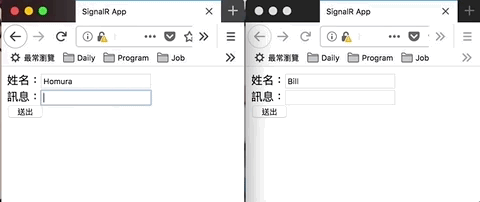

[鐵人賽Day3] 第一個SingalR專案
文章目錄
前言
我想先帶大家做一遍，之後再開始講觀念，因為我覺得這樣會比較好玩一點XD。
建立Web專案
首先先開啟終端機(命令提示字元)，輸入下面指令建立專案
$ dotnet new web -o <專案名稱>
進入資料夾，並開啟VS Code
$ cd <專案名稱>
$ code .
進去後會問你要不要建立debug檔案，選Yes
然後來執行看看吧！
$ dotnet run

註：瀏覽器可能會跳安全性問題，只是因為沒憑證
然後開啟來看看localhosy:5001看看吧！

補充：Windows可能發生的錯誤
這個是我回家時用Win10才碰到的，如果沒碰到可以跳過。
執行時會跳出錯誤'Microsoft.AspNetCore.Connections.Abstractions, Version=2.1.3.0, Culture=neutral, PublicKeyToken=adb9793829ddae60'. The located assembly's manifest definition does not match the assembly reference. (Exception from HRESULT: 0x80131040)
這時只要去專案檔.csproj加入<PackageReference Include="Microsoft.AspNetCore.All" Version="2.1.3" />，然後再執行就會幫你還原沒還原到的套件就OK了!
安裝SignalR套件
後端我們使用Nuget安裝
$ dotnet add package Microsoft.AspNetCore.SignalR.Core --version 1.0.3
註：現在新版不用裝了，直接就using的到
前端我們使用NPM安裝或是LibMan(微軟的新工具)
NPM安裝
先初始化npm套件功能，然後會問一堆套件要叫什麼之類的，一直Enter讓他選默認值就好了。
$ npm init
然後再安裝
$ npm install @aspnet/signalr
還要多做一件事，得先去npm_modules/@aspnet/signalr/browser裡，把signalr.js或signalr.min.js放進你的wwwroot\lib\signalr底下。
> lib\signalr目錄沒有要自己建喔!XD
LibMan安裝
先安裝LibMan
$ dotnet tool install -g Microsoft.Web.LibraryManager.Cli
然後安裝套件
libman install @aspnet/signalr -p unpkg -d wwwroot\lib\signalr --files dist/browser/signalr.js --files dist/browser/signalr.min.js
這邊不懂為啥指令那麼長…..，如果你用LibManUI一裝好就會幫你放到wwwroot底下，但是CLI卻不會…
程式撰寫
我們先從後端開始
建立SignalR Hub
先在專案目錄下建立一個Hub資料夾
$ mkdir Hub
然後Hub底下建立一個ChatHub.cs檔案
註：Namespce 記得取成
專案名稱.Hub
using Microsoft.AspNetCore.SignalR;
using System.Threading.Tasks;
namespace SignalRChat.Hubs
{
public class ChatHub : Hub
{
public async Task SendMessage(string user, string message)
{
await Clients.All.SendAsync("ReceiveMessage", user, message);
}
}
}
依賴注入Signal元件
到Startup.cs底下
引用剛剛建立的專案名稱.Hub
using 專案名稱.Hubs;
再到ConfigureServices()裡註冊SignalR Service
public void ConfigureServices(IServiceCollection services)
{
services.AddSignalR();
}
最後在Configure()使用UseSignalR註冊Router，UseDefaultFiles指向Default的檔案，UseStaticFiles使用靜態檔案，原本的app.Run註解掉。
註：
靜態檔案就是放在wwwroot底下
public void Configure(IApplicationBuilder app, IHostingEnvironment env)
{
app.UseSignalR(routes =>
{
routes.MapHub<ChatHub>("/chatHub");
});
app.UseDefaultFiles();
app.UseStaticFiles();
}
對.NET Core的依賴注入可以看看John Wu大去年鐵人賽的文章https://ithelp.ithome.com.tw/articles/10193172
再來換前端部分
建立首頁
我們在wwwroot裡面建立index.html
內容如下
<!DOCTYPE html>
<html lang="en">
<head>
<meta charset="UTF-8">
<meta name="viewport" content="width=device-width, initial-scale=1.0">
<meta http-equiv="X-UA-Compatible" content="ie=edge">
<title>SignalR App</title>
</head>
<body>
<script src="lib/signalr/signalr.js"></script>
<script>
// JS寫在這
</script>
</body>
</html>
然後我們建立2個輸入input，1個Button，1個訊息區塊
姓名：<input type="text" id="name"><br>
訊息：<input type="text" id="msg"><br>
<Button type="Button" id="submitBtn">送出</Button><br>
<div id="msgDiv"></div>
JS實作
// 建立SignalR連接
var connection = new signalR.HubConnectionBuilder().withUrl("/chatHub").build();
// 傳送訊息事件
connection.on("ReceiveMessage", function (user, message) {
var msg = message;
var encodedMsg = user + " says " + msg;
var li = document.createElement("li");
li.textContent = encodedMsg;
document.getElementById("msgDiv").appendChild(li);
});
// 連接事件
connection.start().catch(function (err) {
return console.error(err.toString());
});
// Button事件
document.getElementById("submitBtn").addEventListener("click", function (event) {
var user = document.getElementById("name").value;
var message = document.getElementById("msg").value;
connection.invoke("SendMessage", user, message).catch(function (err) {
return console.error(err.toString());
});
event.preventDefault();
});
執行結果
最後執行吧！
$ dotnet run
或F5使用VS Code的Debug模式
或是使用VS Code的Debug模式，上一篇有講過VS Cdoe會要求加入Debug檔，就是為了讓VS Code Debug使用，使用方法左邊有隻禁止的蟲點下去，在按執行按鈕就行。
註：如果你沒有Debug組態，下拉選單打開選.NET Core就行了
然後開啟localhost:5001，分別開成2個視窗，效果會像下面這樣
